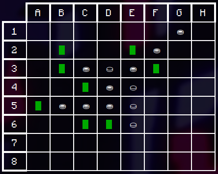

Étudiant en BUT informatique de Lille en 2ème année, je suis en recherche d’un stage de développement d’applications. J’ai toujours été passionné d’informatique étant jeune, je m’y suis notamment intéressé depuis mon utilisation de la 3DS en la « hackant » pour en connaître son fonctionnement, modifier des applications etc.
J’ai réalisé plusieurs projets lors de ma formation tels qu’un jeu de reversi en Java en utilisant la méthode Agile. Sur mon temps libre, j’aide des personnes ayant des problèmes lié au « hacking » de consoles sur Discord en Français et en Anglais, je traduis des applications en Anglais/Français dans les 2 sens. J’ai acquis des compétences en Java, SQL, Bash, interface utilisateur, travail d’équipe, communication. Pour en savoir plus sur mes compétences et mes projets, je vous invite à explorer ce site. Vous pouvez me contacter pour plus d’informations.
Utilisation de la méthode Agile
Permet de se rendre d’un point A à un point B choisi par l’utilisateur
Importation des données dans une base de données avec des commandes Bash et interrogation avec des requêtes SQL